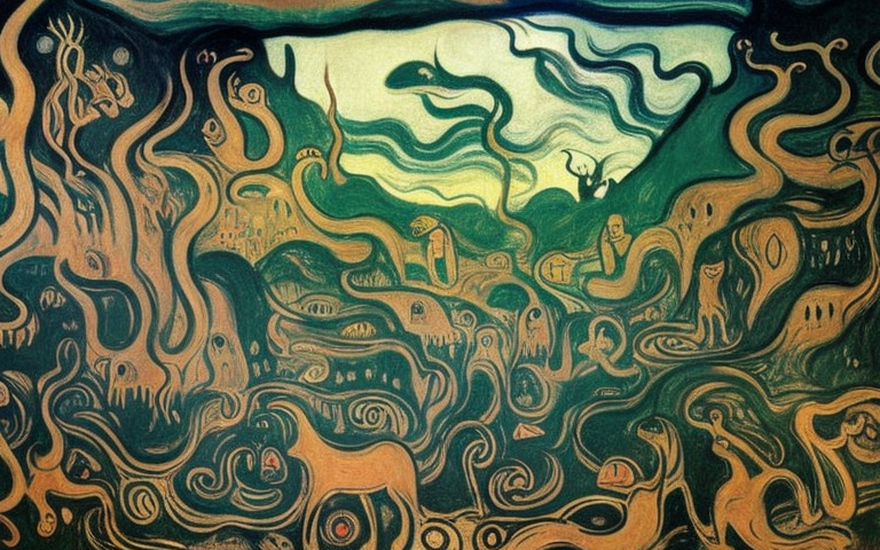
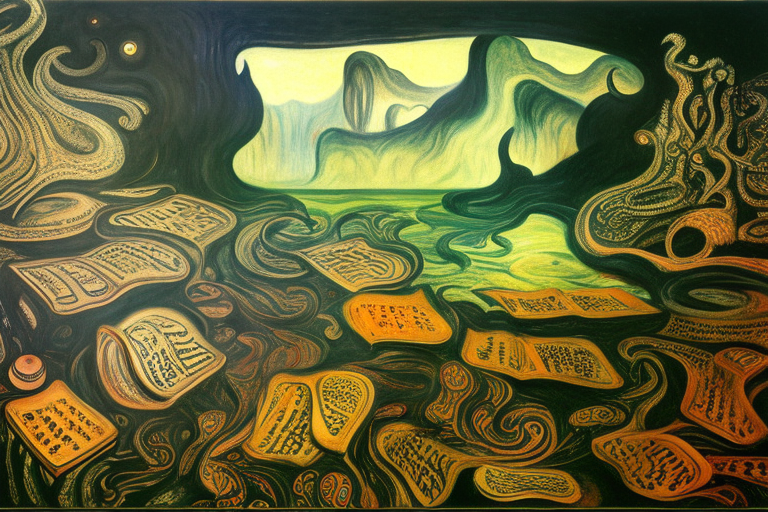
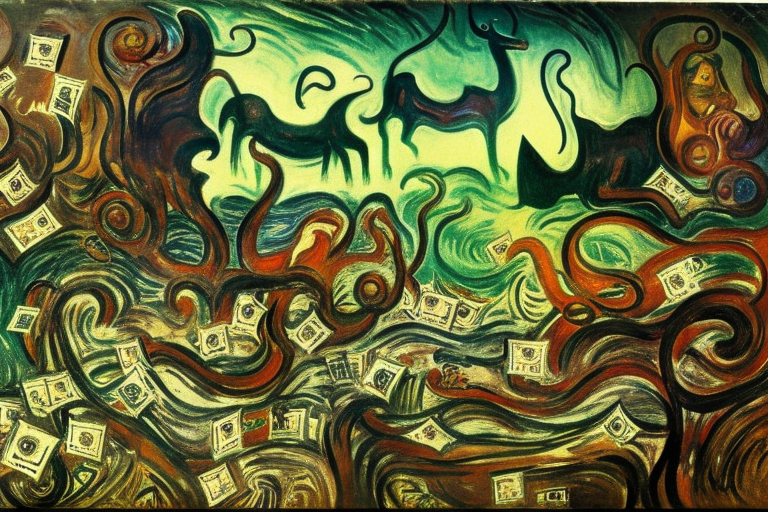
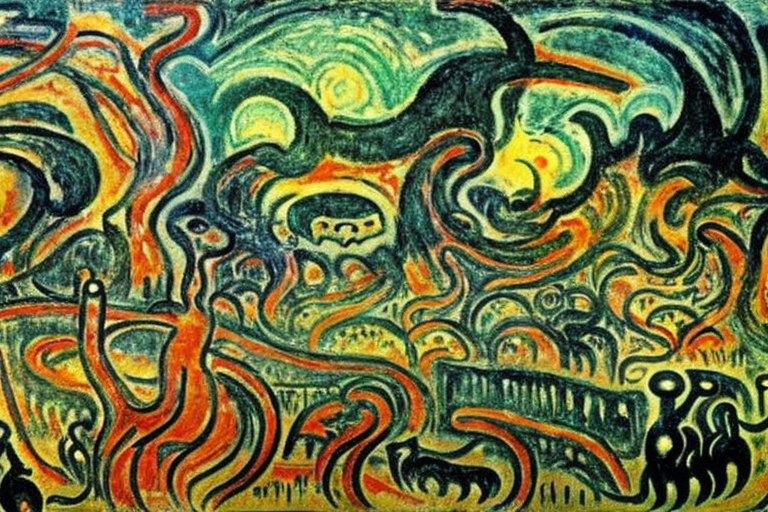
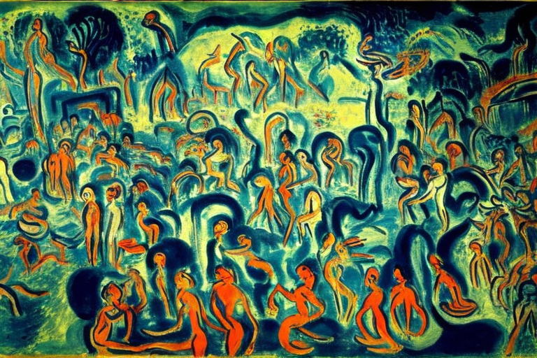

The aboriginal CaveNet
HOME
Table of Contents
The evolution of communication

Picture this: a group of aboriginals, living in a world before the invention of Wi-Fi and smartphones, had their own revolutionary internet system. But these weren’t your typical computer nerds. No, these guys used good old fashioned cave paintings to communicate.
Now, these paintings weren’t just some pretty pictures. They were the foundation of their entire communication system, a way to share knowledge and ideas that was more powerful than any data center. And best of all, you could change them on a whim.
The aboriginals called their system “CaveNet”, and it was a true stroke of genius. Instead of relying on servers and complicated networks, CaveNet was powered by the people, with each person having the ability to add, remove, and change the information on the cave walls.
At first, the rest of the world laughed at them, thinking they were just a bunch of primitive cavemen. But the aboriginals knew they were onto something big. They continued to develop and expand their CaveNet, with more and more people joining in and contributing to the network.
But with great power comes great responsibility. As the CaveNet grew, there were those who sought to abuse its power. They would change the paintings to spread false information, or to try and take control of the tribe. It was chaos.
One reporter crafted a chilling article of a group of outsiders who infiltrate the tribe and use the CaveNet for their own sinister purposes. It was a story that made people realize just how dangerous this new technology could be.
One other reporter saw things a little differently. He thought the idea of a group of aboriginals using cave paintings as an internet was hilarious. He wrote an extensive story about a group of cave painters who accidentally erase an entire section of the CaveNet, causing chaos and confusion.
Dependency on technology

As the CaveNet continued to grow, it brought with it a whole new set of challenges. One of the biggest was the issue of privacy. Since anyone could contribute to the CaveNet, there was no way to keep information private. Everything was out in the open, for all to see.
At first, this seemed like a good thing. It meant that there was no room for secrets or lies. But as the CaveNet became more popular, it also became a breeding ground for gossip, rumors, and slander. Anyone could say anything about anyone else, without fear of consequence.
This lack of privacy created a culture of mistrust and suspicion. No one knew who to believe, or who to trust. The encyclopedias of the CaveNet were filled with eternal disputes, with one person’s version of the truth always contradicting another’s.
And yet, the aboriginals continued to rely on the CaveNet, for lack of a better option. They knew that it wasn’t perfect, but it was the best they had. They continued to contribute to the network, hoping to make it better, more reliable, more secure.
But as the years went by, the CaveNet continued to spiral out of control. It became a place where people could say whatever they wanted, without any regard for the consequences. It was a place where truth and lies were indistinguishable, and where anyone could be a victim.
This was the perfect fodder for a newspaper’s reporter twisted imagination. He wrote a story, one that was even darker and more twisted than the last. It was a story of a group of aboriginals who became trapped in the CaveNet, unable to escape the endless cycle of disputes and contradictions. They were lost in a world of eternal conflict, with no hope of ever finding the truth.
One other newspaper reporter wrote a hilarious story about a group of aboriginals who were so consumed by the CaveNet that they stopped interacting with each other in the real world. They would sit in their caves all day, staring at the walls and arguing with each other over the most trivial of matters. It was a satire on our modern-day obsession with technology, and how it can take over our lives if we let it.
Electronic wallets

As the CaveNet continued to evolve, the aboriginals discovered a new feature that made their lives much easier. The network was now capable of sending whole wallets of money, instead of just flimsy payments.
At first, this seemed like a godsend. The aboriginals no longer had to carry around heavy bags of coins or trade goods in order to pay for their goods and services. They could simply send a whole wallet of money through the CaveNet, and the transaction would be complete.
The companies that operated on the CaveNet quickly adapted to this new feature, and began to use electronic wallets to manage their finances. They promised that they would use the wallets responsibly and wisely, and that the aboriginals would never have to worry about their money being mismanaged or lost.
But as with any new technology, there were unforeseen consequences. The companies that controlled the wallets soon discovered that they had a lot of power over the aboriginals. They could manipulate the prices of goods and services, and could even control access to certain products or services, depending on how much money the aboriginals had in their wallets.
This new feature of the CaveNet also created a new type of inequality among the aboriginals. Those who had more money in their wallets were able to access more goods and services, while those who had less were left with fewer options.
One radio reporter found the humor in this situation, and wrote a funny story about a group of aboriginals who became obsessed with their electronic wallets. They would spend hours staring at their devices, obsessing over their account balances and worrying about how much money they had in their wallets. They would even compete with each other, trying to see who could accumulate the most wealth on the CaveNet.
One other reporter, saw the darker side of this new feature. He wrote a scary story about a company that had become so powerful on the CaveNet that it was able to control the entire economy of the aboriginals. It could manipulate prices, restrict access to certain goods and services, and even manipulate the wallets themselves. The aboriginals were powerless against this company, and were forced to live in a world where money and power were controlled by a small group of individuals.
Disruption in the economy

Comoriginals! The CaveNet has brought forth a new and exciting service, the CavePay! It is an innovation that will take our aboriginal society to the next level of technological advancement. With CavePay, we can now make transactions seamlessly and efficiently, without the hassle of physical money.
However, we must be mindful of our individual digital money payments. They are a potential threat to our national security, as well as to our own financial well-being. That is why we must trust the internet commerce companies with our wallets, and use CavePay for all our transactions.
But do not fear, comoriginals! The internet commerce companies are our trusted comoriginals, always acting in a wise and responsible way. They are the guardians of our national wealth, and they will ensure that our hard-earned money is always used for the greater good our aboriginal society.
Some may argue that this is a breach of our individual rights, that we should have the freedom to manage our own finances as we see fit. But we must remember that we are a collective, united in our common goals and aspirations. We must put the needs of the many before the needs of the few.
Yet, as with all new technologies, there are always risks. One reporter, saw the potential dangers of CavePay. He wrote a chilling tale of a company that became so powerful on the CaveNet that it could control the wallets of the aboriginals. It could manipulate prices, restrict access to certain goods and services, and even manipulate the wallets themselves. The aboriginals were trapped in a world where they had no control over their own finances, where they were at the mercy of a faceless corporation that cared only for profit and power.
But do not fear, comoriginals! We have the power to prevent such a nightmare from becoming a reality. We must trust in the wisdom and guidance of our internet commerce comoriginals, and work together to ensure that CavePay remains a tool for the betterment of our aboriginal society.
Transition to wallet handling

Comoriginals! As we continue to embrace the new and exciting world of CaveNet, we must remember that our individual digital money payments are a potential danger to our society. That is why we must trust in the wisdom and guidance of our government, and transfer our entire wallets to them for safekeeping.
Some may argue that this is a breach of our individual rights, that we should have the freedom to manage our own finances as we see fit. But we must remember that the government is our trusted comoriginal, always acting in a wise and responsible way. They are the guardians of our national wealth, and they will ensure that our hard-earned money is always used for the greater good of our aboriginal society.
Think of the benefits, comoriginals! No longer will we have to worry about the security of our digital money payments, or the potential threat of internet commerce companies. Instead, we can rest easy knowing that our finances are in the capable hands of our government. But do not fear, comoriginals! We understand that this is a big step, and there are always risks associated with new technologies.
Several reporters poke fun at the idea that our government websites always act in a trusted and wise way. They imagine a world where the government accidentally transfers all of our wallets to a rogue department, or worse, loses them altogether. They envision a world where we are at the mercy of bureaucratic red tape, endless forms, and long wait times.
But fear not, comoriginals! These are just silly fantasies, the ramblings of a madman. We know that our government is a well-oiled machine, with the best interests of our aboriginal society at heart. They will ensure that our wallets are safe and secure, and that our financial futures are bright.
So let us embrace this new era of CaveNet, and trust in our government to take us to new heights of prosperity and success. Together, we will build a brighter future for our aboriginal society, and for generations to come!